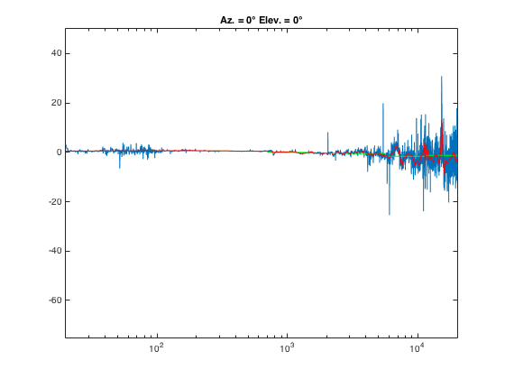

Contents
function [ output ] = PlotComparasonSpectrum_2( normSignalFilename,...
testSignalFilename,...
azimuth,...
elevation,...
fs, x, l, m...
)
Description of Function
User Inputs
folder = sprintf('Globe_Full_Recordings/');
smoothing = 1000;
Input Files
normSignalFilepath = sprintf('%s%s', folder, normSignalFilename);
testSignalFilepath = sprintf('%s%s', folder, testSignalFilename);
normSignal = audioread(normSignalFilepath);
testSignal = audioread(testSignalFilepath);
Check Input Files Are of Correct Format
if length(normSignal) ~= length(testSignal)
error(...
'normal signal %s is NOT of same length as test signal %s',...
normSignalFilename, testSignalFilename...
);
Begin Conditional Code
else
Calculate Spectra Difference
N = length(testSignal);
han = hanning(N);
normSignal = normSignal.*han;
testSignal = testSignal.*han;
normSpectrum = abs(fft(normSignal, N));
normSpectrum = 20*log10(normSpectrum);
testSpectrum = abs(fft(testSignal, N));
testSpectrum = 20*log10(testSpectrum);
comparSpectrum = testSpectrum - normSpectrum;
Smooth Difference Curve
g = gausswin(smoothing);
g = g/sum(g);
smoothComparSpectrum = conv(comparSpectrum, g, 'same');
Plot Difference Curves
freq_axis = 0:fs/N:fs-(fs/N);
maxPlotSample = round(((16000*(2^(1/2)))*N)/fs);
subplot(l, m, x), pCS = semilogx(freq_axis(1:maxPlotSample),...
comparSpectrum(1:maxPlotSample));
hold on;
subplot(l, m, x), pSCS = semilogx(freq_axis(1:maxPlotSample),...
smoothComparSpectrum(1:maxPlotSample),...
'r', 'linewidth', 1);
axis([20,20000,-75,50]);
graphTitle = sprintf ('Az. = %d%c Elev. = %d%c',...
azimuth, char(176), elevation, char(176));
title(graphTitle);
Calculate Ovtave Band Samples
freq22_1HzSample = round((( 31.25 / (2^(1/2)))*N)/fs);
freq44_2HzSample = round((( 62.5 / (2^(1/2)))*N)/fs);
freq88_4HzSample = round((( 125 / (2^(1/2)))*N)/fs);
freq176_8HzSample = round((( 250 / (2^(1/2)))*N)/fs);
freq353_6HzSample = round((( 500 / (2^(1/2)))*N)/fs);
freq707_1HzSample = round((( 1000 / (2^(1/2)))*N)/fs);
freq1414_2HzSample = round((( 2000 / (2^(1/2)))*N)/fs);
freq2828_4HzSample = round((( 4000 / (2^(1/2)))*N)/fs);
freq5656_9HzSample = round((( 8000 / (2^(1/2)))*N)/fs);
freq11313_7HzSample = round((( 16000 / (2^(1/2)))*N)/fs);
freq22627_4HzSample = round((( 16000 * (2^(1/2)))*N)/fs);
Calculate Octave Band Averages
outputAverageVector = comparSpectrum;
output(1) = mean...
(outputAverageVector(freq22_1HzSample :freq44_2HzSample ));
output(2) = mean...
(outputAverageVector(freq44_2HzSample :freq88_4HzSample ));
output(3) = mean...
(outputAverageVector(freq88_4HzSample :freq176_8HzSample ));
output(4) = mean...
(outputAverageVector(freq176_8HzSample :freq353_6HzSample ));
output(5) = mean...
(outputAverageVector(freq353_6HzSample :freq707_1HzSample ));
output(6) = mean...
(outputAverageVector(freq707_1HzSample :freq1414_2HzSample ));
output(7) = mean...
(outputAverageVector(freq1414_2HzSample :freq2828_4HzSample ));
output(8) = mean...
(outputAverageVector(freq2828_4HzSample :freq5656_9HzSample ));
output(9) = mean...
(outputAverageVector(freq5656_9HzSample :freq11313_7HzSample));
output(10) = mean...
(outputAverageVector(freq11313_7HzSample:freq22627_4HzSample));
plottingOctaveBandAverageResponse...
( 1 : freq22_1HzSample ) = NaN;
plottingOctaveBandAverageResponse...
( freq22_1HzSample : freq44_2HzSample ) = output(1);
plottingOctaveBandAverageResponse...
( freq44_2HzSample : freq88_4HzSample ) = output(2);
plottingOctaveBandAverageResponse...
( freq88_4HzSample : freq176_8HzSample ) = output(3);
plottingOctaveBandAverageResponse...
( freq176_8HzSample : freq353_6HzSample ) = output(4);
plottingOctaveBandAverageResponse...
( freq353_6HzSample : freq707_1HzSample ) = output(5);
plottingOctaveBandAverageResponse...
( freq707_1HzSample : freq1414_2HzSample ) = output(6);
plottingOctaveBandAverageResponse...
( freq1414_2HzSample : freq2828_4HzSample ) = output(7);
plottingOctaveBandAverageResponse...
( freq2828_4HzSample : freq5656_9HzSample ) = output(8);
plottingOctaveBandAverageResponse...
( freq5656_9HzSample : freq11313_7HzSample ) = output(9);
plottingOctaveBandAverageResponse...
( freq11313_7HzSample : freq22627_4HzSample ) = output(10);
Plot Octave Band Averages
subplot(l, m, x),...
pOBAR = semilogx(freq_axis(1:maxPlotSample),...
plottingOctaveBandAverageResponse,...
'g', 'linewidth', 1);
Organise Graph
uistack(pSCS, 'top');

End Conditional Code
end
End Function
end